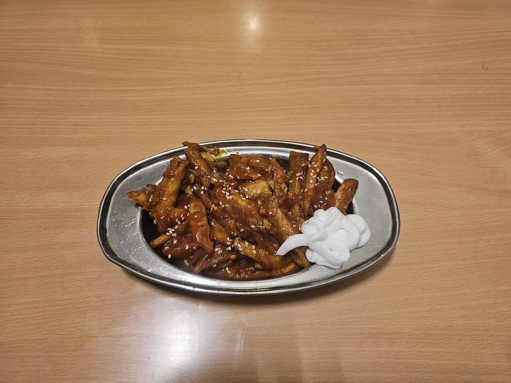

Honey Chilli Potato
twice-fried potato batons in a sticky sweet-hot honey and sesame glaze

Contains: gluten, sesame, soy
Checked against the ingredient list for ten allergens: milk, egg, fish, crustaceans, tree nuts, peanuts, sesame, mustard, soy and gluten. Brands vary, so read the label on anything new to you.
Ingredients
Quantities for 4.
- 700g, cut into 1cm batons Potatoa floury variety fries crispest
- 6 tbsp Cornflour5 for the coating, 1 for the glaze
- 2 tbsp Maida
- 1.5 tsp Kashmiri Chilli
- 3 tbsp Honey
- 1.5 tbsp Soy Sauce
- 1 tbsp Vinegar
- 10 cloves, finely chopped Garlic
- 2, finely chopped Green Chilli
- 3, broken Dried Red Chilli
- 2 tbsp, toasted Sesame
- 4, greens sliced Spring Onion
- 1/2 tsp Black Pepper
- 600ml for frying, plus 2 tbsp for the glaze Neutral Oil
- to taste Salt
- 100ml Water
Cookware
stovetop, kadhai
Before you start
- Soak the cut batons in cold water for 20 minutes to wash off surface starch, then drain and dry them completely on a cloth.
- Toast the sesame in a dry pan until it pops and smells nutty, and set it aside before you start frying.
- This dish is deep-fried twice. Do not attempt it in shallow oil. The batons need to swim to crisp evenly.
- Have the glaze ingredients measured into one bowl; the toss at the end takes 90 seconds.
Method
- Dry the soaked batons thoroughly, then toss with 5 tbsp cornflour, the maida, 1/2 tsp kashmiri chilli and 1/2 tsp salt until dusty and separate.Any water left on the potato turns the coating to glue and it will slide off in the oil.
- Heat the oil in a kadhai to 160C and fry the batons in three batches for 5 minutes each, until cooked through but still pale. Drain.This first fry is about cooking the inside, not colour. Pull them out while they are still blond.
- Rest the fried batons 10 minutes, then raise the oil to 190C and fry each batch again for 2 minutes until deep gold and rigid. Drain on paper.The rest between fries is what makes them stay crisp under a wet glaze. Do not skip it.
- Heat 2 tbsp oil in a wide pan, add the broken dried chillies and the garlic and fry 45 seconds until fragrant.
- Add the green chilli, the remaining 1 tsp kashmiri chilli, the soy sauce, vinegar, black pepper and 100ml water and boil 1 minute.
- Stir in the honey and slake 1 tbsp cornflour in 2 tbsp cold water; add it and cook until the glaze is thick, shining and sticky, about 1 minute.Add the honey off a rolling boil. Hard-boiled honey turns bitter.
- Tip in the hot potatoes and toss for 30 seconds, just long enough to lacquer them.
- Take off the heat, throw in the sesame and spring onion greens, toss once and turn out onto a platter. Serve within 5 minutes; this dish waits for nobody.
Storage
Eat immediately. The glaze softens the crust within 15 minutes. The first fry can be done 4 hours ahead and held at room temperature; do the second fry and glaze to order.
Nutrition Good estimate
Low protein: 7 g a serving, 5% of the calories
| Per serving282 g | Per 100 g | |
|---|---|---|
| Calories | 529 kcal | 188 kcal |
| Protein | 6.7 g | 2 g |
| Carbohydrate | 75.9 g | 27 g |
| of which sugars | 15.1 g | 5 g |
| Fibre | 5.7 g | 2 g |
| Fat | 23.4 g | 8 g |
| of which saturated | 2.6 g | 1 g |
| of which unsaturated | 19.7 g | 7 g |
Ingredients given to taste count as zero, so the real figures run a little higher. Estimated from raw ingredients using USDA FoodData Central.
Times, yields, allergens and nutrition are guidance. Use your own judgement on doneness and on storing. More in About.